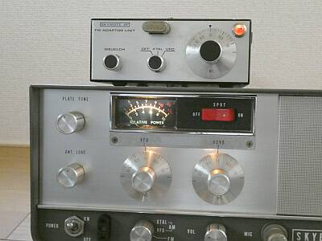
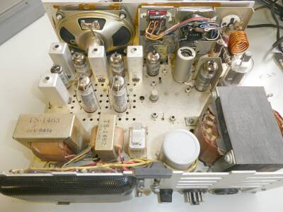
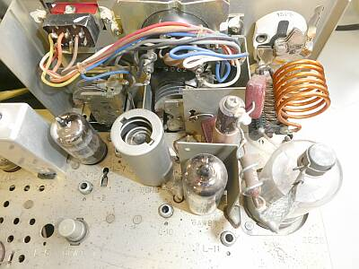
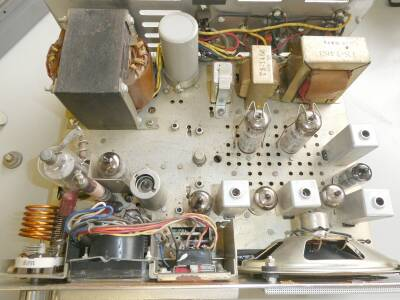
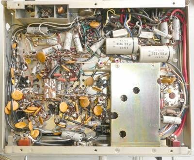
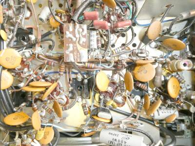
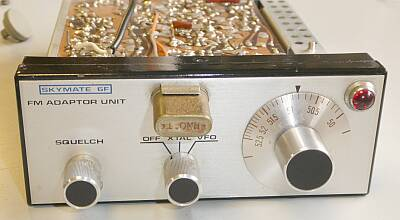
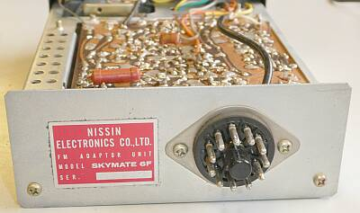
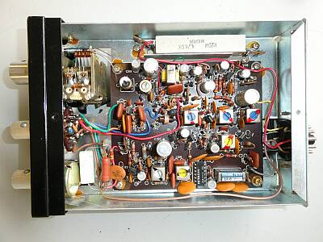
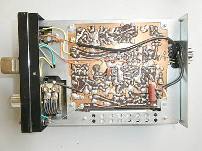

 |
操作の中心は、このあたり
ダイヤル照明は、ちゃんと考慮されています
ご覧のように、エスカッションの下に照明ランプが用意されています（ナイスです）
写真は、ＦＭモードを選択時の様子です
|
 |
リアパネル側よりシャーシ上面を見る
リレーは、手前中央に1個だけ |
 |
ＲＦ部です
送信終段は、２Ｅ２６
いわゆるΠマッチです
受信のＴＯＰは、左下に見える６ＣＷ４（ニュービスタ）です |
 |
真上からシャーシ上面を見る
AMは、６ＧＷ８プッシュプルのプレートスクリーン同時変調
|
 |
シャーシ下（底）面の様子
左上には、ＴＶＩ対策のＬＰＦが組み込まれています（受信時も有効）
シールドがしてある向こうはオシレータ／ＶＦＯ部
ＡＭ送信時は４逓倍、１２.５－１３.１２５ＭＨｚをカバーします
フロントパネルにソケットのあるクリスタルは６逓倍、ＴＸ-８８Ｄ等と同じです
受信においては、４４.２５５－４６.７５５ＭＨｚとずいぶん高い周波数を発振させることになります
第１ＩＦ：５７４５ＫＨｚ 第２ＩＦ：４５５ＫＨｚ のダブルスーパーヘテロダイン方式が採用されています
|
 |
シャーシ下（底）の様子
上写真の中央左側・・・探せるかな？？
長四角の基板
これが、受信信号をＦＭアダプタに接続するＩ／Ｆ部です
唯一、信号系にトランジスタが使われています
その下にビニルテープに巻かれて見えるクリスタルは、５.７４５ＭＨｚの第１IFから４５５ＫＨｚ第２ＩＦに変換するためのものです |
|
 |
ＳＫＹＭＡＴＥ ６Ｆ
ＦＭアダプタ のフロントパネルです
クリスタルは、呼び出し周波数である５１.０MHｚ・・・８.５０ＭＨｚのものです
送信は６逓倍、ＴＸ-８８Ｄ等と同じで、このＶＦＯは、８.３３３－８.７５０ＭＨｚをカバーします
きっと４逓倍では必要なデビエーションが得られない？！ |
 |
ＳＫＹＭＡＴＥ ６Ｆ
ＦＭアダプタのリアパネルです
１１Ｐケーブル1本で本体と接続します |
 |
ＳＫＹＭＡＴＥ ６Ｆ
ＦＭアダプタの基板表面です
大きなセメント抵抗は、＋B電圧からトランジスタ用に低圧を得るために直列に入っているものです
ＶＦＯ部には、その先ツェナーダイオードで安定化させてあります
これらは、今風ではありません・・・・
|
 |
ＳＫＹＭＡＴＥ ６Ｆ
ＦＭアダプタの基板裏側です
ＦＭは、可変リアクタンス周波数変調です |
|